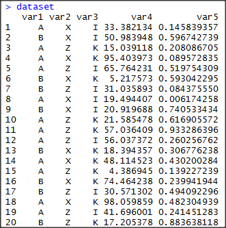
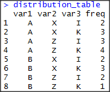
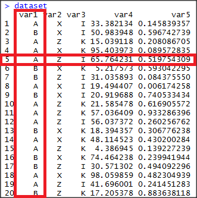

This post is less of a how to and more of an algorithm idea.
Inspired by random walk and monte carlo, I wanted to write an algorithm that could be used to synthetically upsample data that is a mixture of factoral and numeric data, where the columns are not independent.
My original hope was to synthesize factoral combinations.
But that doesn’t work. Without outside knowledge of what factorial column combinations are allowed, I have to work with the combinations present in the input data.
Thus essentially sampling the data.
Let’s work through a few visuals to see what I mean.
##### Creating the dataset #####
class_list1 <- c('A', 'B')
class_list2 <- c('Z', 'X')
class_list3 <- c('I', 'K')
dataset <- data.frame(
cbind(sample(class_list1, size = 20, replace = TRUE),
sample(class_list2, size = 20, replace = TRUE),
sample(class_list3, size = 20, replace = TRUE),
runif(20,0,100),
runif(20,0,1)
)
)

Ok, we have a random dataset with three columns of factoral data and two columns of numeric data.
Let’s cut this down to just the factoral data, to make it easier to think through. We’ll add a count column on there as well.
factor_list <- names(Filter(is.factor, dataset))
distribution_table <- count(dataset, vars = factor_list)

From this, we can see the known allowed column combinations.
We’ll have to assume that these are all of the allowed combinations. (Let’s not randomly create a new ‘C’ value for Var1, etc)
Sampling
This is the part that caused me trouble.
At first, I thought I could
- Randomly select a column and a row.
Then identify all possible values (and distribution) for that column given the values of the other columns in that row.

- So we would say “Given that Var2 is ‘Z’ and Var3 is ‘I’, what are the possible values for Var 1? and What’s their distributions?”
- But how is that more insightful than a straight sampling of the raw dataset? We’ll get to the same distributions. And it’s not like one approach gives better insight into the rules governing the dependence between the columns.
Given the above, we’ll randomly sample a row from the dataset to be our starting point.
fake_row_num <- sample(nrow(dataset), 1);
fake_row <- dataset[fake_row_num,];
This gives us a set combination of factoral values, as well as a starting point for our numeric values.
- We’ll leave the factoral values alone (hey, we randomly selected them, fair and square.)
- Now to walk our numerics!
Numeric Columns
Given the factor combination, let’s look at the numeric columns.
merge(dataset, fake_row[,factor_list], by = factor_list)

I need to work the math on this one, and see if there’s a better solution. (Time to review Financial Monte Carlo models…)
The current solution I’m using to to randomly select a value withing a standard deviation of our random row’s starting value. With the caveat that this randomly selected value cannot go outside of the known Min/Max of the numeric column when filtered to that factor combination.
Example, in the above image, we would say the Var4 cannot go below 41.69 and cannot go above 65.76
- We want to maintain any relation between the factoral columns and the numeric values.
repeat{
proposed_value <- runif(1, min = fake_row[,synth_col] - std, max = fake_row[,synth_col] + std);
if (proposed_value >= min(dataset_filtered[,synth_col]) &
proposed_value <= max(dataset_filtered[,synth_col])) break
}
So, given the fact that ‘Part 1’ is in the post title, we can safely assume that there’s more work to do. But it’s an acceptable start.
The WIP code can be found in the repo.
Disclaimer
I’m sure this is already a solved problem. So I apologize if I’m duplicating someone else’s work.